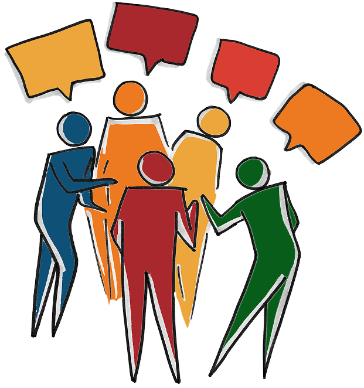

Saiba como tradução, intérpretes, dublagem e legendagem aproximam pessoas e culturas.

Conheça detalhadamente cada área de informações que disponibilizamos ao interagir e explorar pela nossa coletânea de conhecimentos sobre Tradução, Dublagem, Legendagem e Intérpretes.
Descubra como transformar ideias e significados entre diferentes línguas.
Descubra como a dublagem recria vozes e sentidos, levando histórias além das barreiras do idioma.
Descubra como a legendagem transforma falas em texto, preservando os sentidos e as emoções.
Descubra como os intérpretes lidam com a pressão de traduzir em tempo real, equilibrando precisão, emoção e contexto cultural.
Acesse nossa experiência única de dublar o vídeo de sua escolha para experimentar o processo dos dubladores ao vivo.
📍Nós somos estudantes do Primeiro Ano do EM do Instituto Federal Catarinense - Campus Concórdia, cursamos informática para internet. Criamos esse site com o intuito de disponibilizar informações.